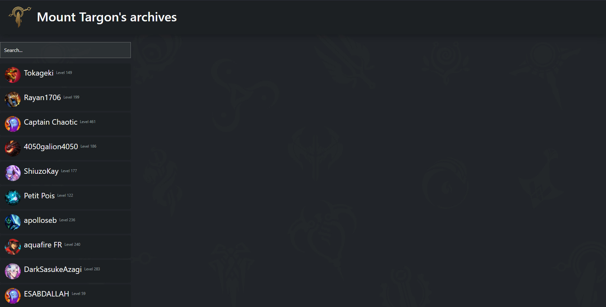

L'objectif de ce projet était simplement d'utiliser une base de donnée avec sqlite
et de travailler en groupe. C'était donc l'occasion de tenter de faire un projet original (bien que j'essaie
souvent de me fixer cet objectif), on a donc choisi de faire un site web avec flask et d'exploiter une BDD
construite par nos soins à partir de l'API fournie par RiotGames afin de récupérer des statistiques
sur des joueurs de league of legends. En plus de devoir apprendre
à utiliser ce framework, j'ai donc du mettre en place un serveur complet. Le serveur choisi sera un petit
vps avec une distribution ubuntu. Pour le site, j'ai utilisé le framework bootstrap pour le design et en ai
profité pour installer nginx pour un autre projet. Le nom du projet, Mount Targon's archives est une
référence à une des régions du monde du jeu League of Legends.
Le fond représente les icones des différentes autres régions du jeu.

Page d'accueil du site
La base de donnée aura donc été faite à partir de données récupérées via l'API de RiotGames. Pour cela, on a utilisé la librairie requests pour récupérer les données et les stocker dans un fichier .db, que l'on pourra exploiter ensuite. Pour la gestion de la base de donnée, on a utilisé sqlite3. La base de donnée contient les tables joueurs (nom des joueurs, l'url de l'icone de profil du joueur, le niveau ainsi que la région du serveur utilisé), maitrises (champion maitrisé, niveau de maitrise, nom du joueur, l'url de l'icone du champion) ainsi que la table parties (qui contient diverses informations sur la partie, comme les adversaires, temps de jeu, performances, etc...). Pour la gestion de la base de donnée, chaque fonction est dans un fichier à part, ce qui permet une meilleure gestion et lisibilité du code.
La page d'accueil du site est une page de recherche, on peut donc rechercher un joueur et afficher ses
statistiques. L'objectif de base étant d'utiliser une base de données, elle ne fait pas d'appel à l'API
et ne possède donc pas tout les joueurs et n'est pas à jour si les données ont changé entre temps.
Le champ de recherche est fait en JavaScript et redirige l'utilisateur vers la page de profil du joueur
sous l'url "domain.name/users/{usrName}". Cette page affiche les statistiques du joueur,
on peut aussi voir les statistiques de quelques parties.
usrName dans l'url est une variable fournie à Flask, qui va aller chercher les données correspondantes
dans la BDD et calculer les statistiques.
Ce projet est sans doute l'un de mes projets préféré. Il aura été très constructif pour moi de travailler en équipe. Ce serait avec un grand plaisir que je travaillerais de nouveau avec ma partenaire ! Bien que flask ne soit pas forcément l'outil le plus efficace pour ce genre de projet, il nous a permis de nous familiariser avec ce framework et de découvrir plus en détail le côté backend d'une application web. La gestion d'un serveur s'est avérée être un point intéréssant de ce projet, bien que je continue de préférer le développement. J'ai également pu découvrir le framework bootstrap, qui est très pratique pour le design d'un site web.